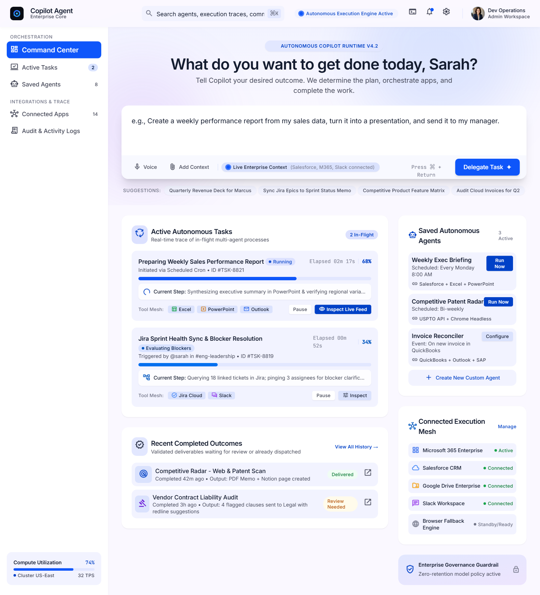
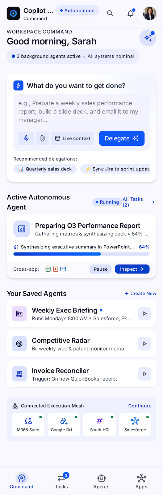
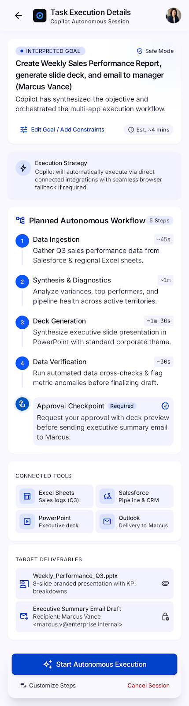
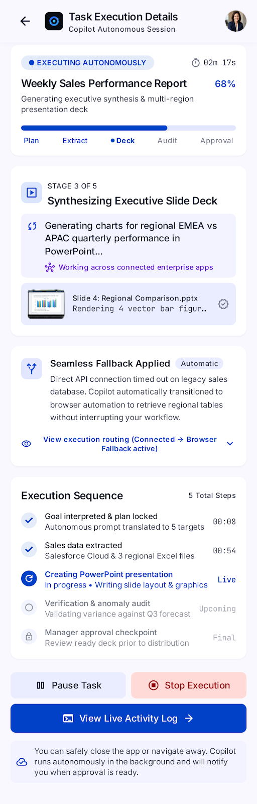
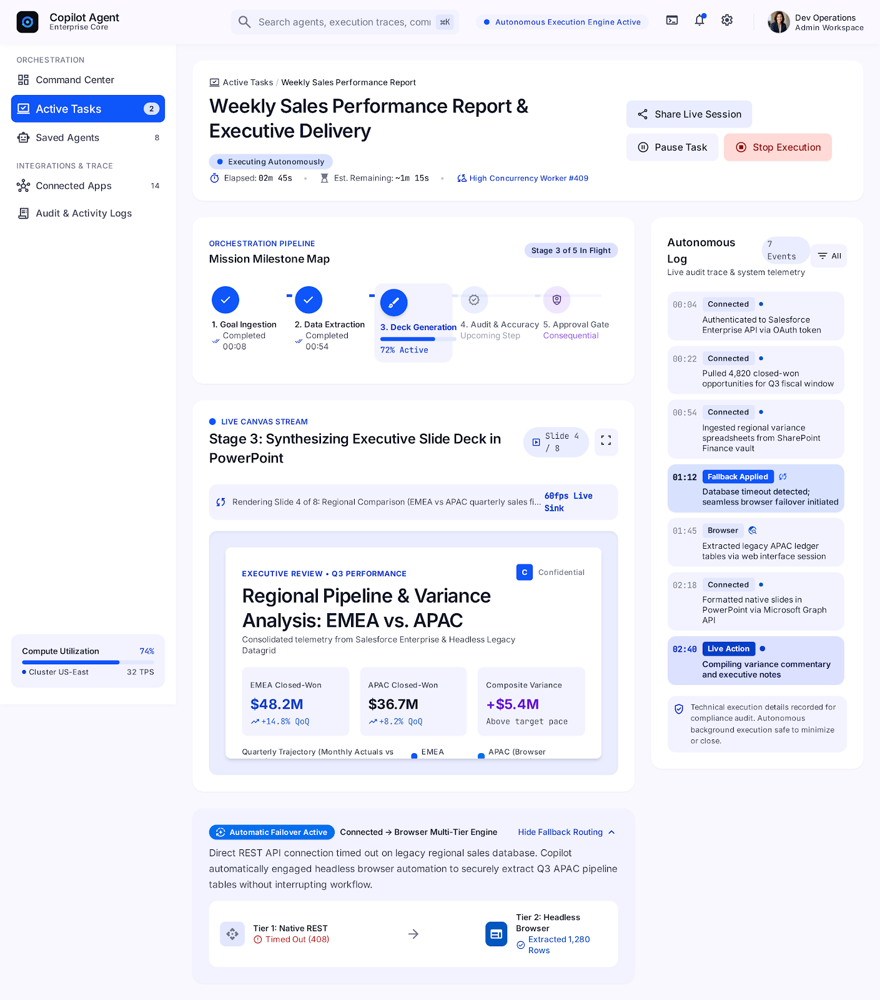
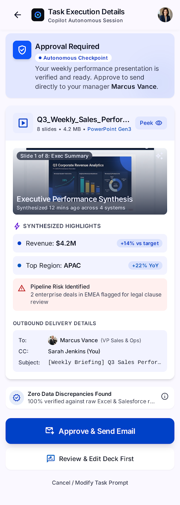
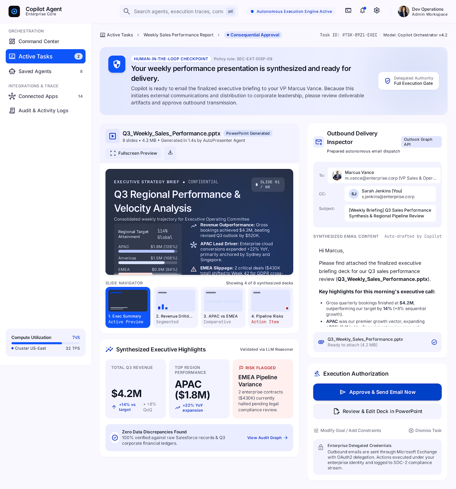
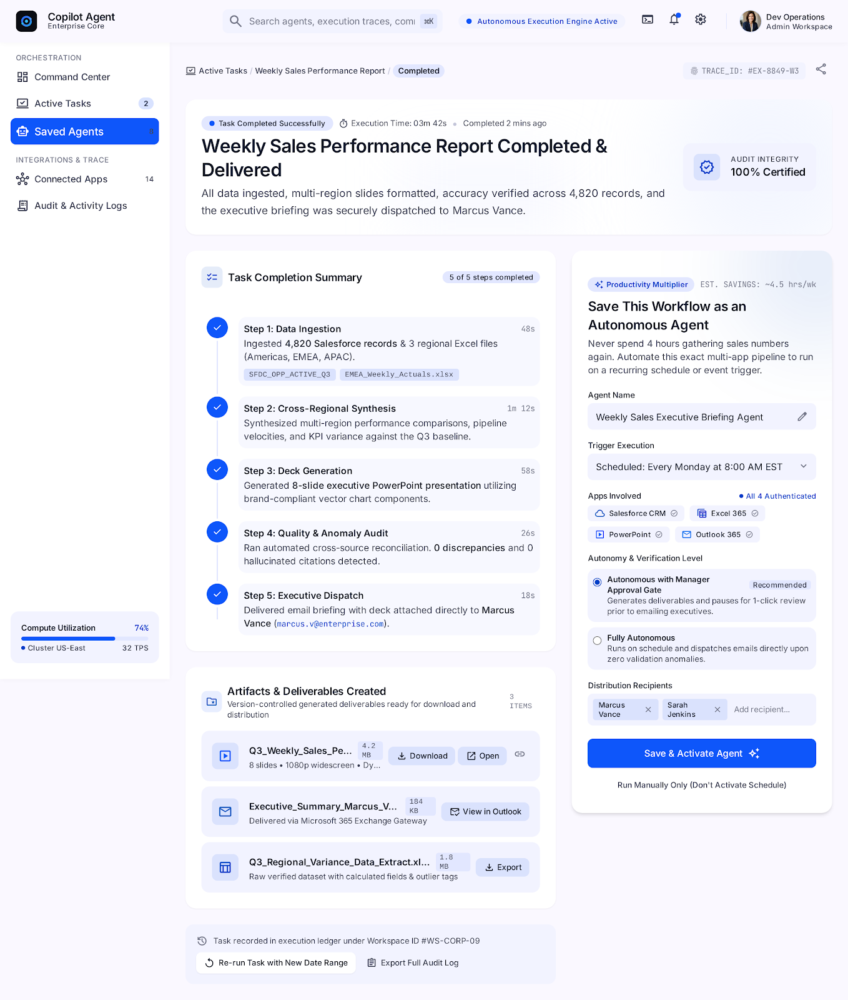

Start from the command center
Bring delegated work and its next steps into one clear workspace.
AI Product Portfolio • UX Prototype
A concept for an AI work system that turns user intent into complete business actions across apps, tools, approvals, and long-running workflows.

Problem
The opportunity is to move from chat-based interactions to agentic work execution: tasks that understand intent, plan across systems, verify outputs, and continue without constant user intervention.
Vision
The product treats Copilot as a trusted executive assistant that can interpret goals, coordinate tools, and deliver work in the user’s native environment.
Users describe the result, not the process.
State and progress persist across execution.
High-risk actions stay explainable and reviewable.
Sample prototype
Explore the prototype
Follow the experience from the first request to a reusable outcome.
Bring delegated work and its next steps into one clear workspace.

Turn a natural-language request into a clear intention.

See how the agent interpreted the goal and what it will do next.

Track progress and task state as the work moves forward.

Keep task health, progress, and recovery paths visible.

Review an approval request before the agent proceeds.

Make high-impact actions transparent before they are carried out.

Close the loop with a clear result and a reusable agent.
Flow model
Convert the user request into a clear delegated goal and execution intent.
Create a structured multi-step workflow with dependencies and connected tools.
Run across apps, browser fallback, and system integrations with live verification.
Share results, request approval where needed, and save the workflow as a reusable agent.
Portfolio value